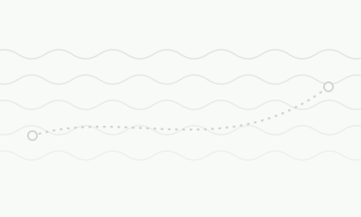

Energy, Tunisia–Italy: the EIB takes stock of the Elmed project
Tunisian and EIB officials met to discuss the progress of the Elmed electricity interconnection project between Tunisia and Italy.
A 7.5 km long cable connecting Sicily and Calabria, laid up to 250 meters deep in the waters of the Strait of Messina.
A 7.5 km cable connects Sicily and Calabria at 250m deep in the Strait of Messina, increasing energy exchange capacity to 2,000 MW.

Tunisia, energy cooperation with Algeria and Libya. A 1,400 MW power plant is being studied
Tunisia, Algeria and Libya are discussing a 400 kV power grid interconnection. Tunisia and Algeria are also studying a 1,400 MW power plant project.
In the #MartedìInCantiere stage we enter the Piossasco (TO) conversion station, the technological heart of the interconnection…
The Piossasco (TO) conversion station is Terna’s only VSC-based facility, managing 1,200 MW of HVDC electricity exchange between Italy and France.

The Public Consultation for the new Adriatic Ridge continues: Foggia-Forlì, strategic infrastructure to strengthen the corridor…
Terna is holding public consultations for the 600 km Foggia-Forlì HVDC power line, a strategic project to boost energy exchange and renewable integration in Italy.

IPTO Plans Surveys for 2nd Greece-Italy Power Cable in Early 2027
IPTO will begin seabed surveys in early 2027 for a second electricity power cable between Greece and Italy, developed in partnership with Terna.

We welcomed to Terna the colleagues who have completed the II level Master's course in "Digitalization...
Terna welcomed 57 graduates of the TyrrhenianLab master's program, which supports the TyrrhenianLink project, and inaugurated the fifth edition across three universities.

The authorization process for the rationalization of the electricity grid in the Suvereto area, in the province of Livorno, is underway.
The authorization process has begun to bury 12 km of power lines in Suvereto, Livorno, allowing the removal of 32 km of overhead lines and 107 pylons.

Gas networks are preparing for hydrogen: with resolution 407/2026/R/com, ARERA starts the implementation of the new European framework on…
Gas networks are preparing for hydrogen: with resolution 407/2026/R/com, ARERA starts the implementation of the new European framework on infrastructure planning. From the 2027 Development Plan to the common scenarios for gas, hydrogen and electricity, here's what changes

Abeille Marengo Sails to Begin Greece-Cyprus Cable Surveys as Turkey Claims Its Consent Was Obtained, Athens Pushes Back
The Abeille Marengo left Heraklion for Greece-Cyprus cable surveys, sparking a dispute after Turkey claimed it gave consent, which Athens denied.
Contributions for sustainable interconnection and cycling projects in the territories of Sardinia
The Sardinia Region is offering €25,000,000 for sustainable cycling projects to improve territorial connectivity by 26/11/2026.

Tunisia-EU, Elmed's 1.42 billion match: energy and investments to integrate the two sides
The interconnection with Italy enters the contract phase. The new Pact for the Mediterranean aims to strengthen production chains and security of supplies, but for Tunis the challenge involves strengthening the network and the ability to attract capital

Tunisia – EU: from the Mediterranean Pact to Elmed
Tunisia and the EU are building a strategic partnership based on reciprocity and economic integration, moving beyond emergency management.

Tunisia-Italy Ambassador Prunas Elmed project strategic for the energy security of the two countries
The Elmed electricity connection between Tunisia and Italy is at the center of the declarations of the Italian ambassador to Tunisia, who defined it as a strategic infrastructure for the energy security of the two countries.

The utility bills decree: between subsidies and actual savings
Italy's new energy decree aims to lower electricity prices by subsidizing gas plants, but consumers may bear the costs, making the net savings uncertain.

Elmed, 770 million tender for the Italy-Tunisia electricity cable
Elmed, 770 million tender for the Italy-Tunisia electricity cable. Terna and STEG entrust Hitachi with the conversion stations of the first electricity interconnection between Europe and North Africa

Malta, the electricity interconnector with Sicily suspended for 8 days
Malta's electricity interconnector with Sicily will be suspended for 8 days starting October 27 to facilitate work on the second interconnector (IC2).

Blue economy, Italy's energy and digital hub of the Mediterranean. Ports and infrastructures, the challenges to be overcome
Intesa Sanpaolo and Sda Bocconi, two new studies indicate the new challenges for the future of the Mare Nostrum: Italy can become the strategic connection between Europe, Africa and the Middle East for data and energy, but investments, skills and a transformation of the port system are needed. Italy can strengthen its role as a strategic connection between Europe, [...]

IC1 to shut down for eight days as works on second interconnector advance
Local generators will be covering Malta's electricity needs in the next eight days to cover the shutdown of the first Interconnector, and works continue on the second interconenctor at Ragusa Substation in Sicily
the laying of the submarine cables of the power line between Calabria and Sicily has begun - Terna spa
The “Bolano-Annunziata” electrical connection will increase the exchange capacity between Sicily and the Continent by up to 2,000 MW; for the first time, 380 kV alternating current submarine cables with XLPE insulation will be used on the National Transmission Grid; the laying of the submarine cables will be carried out by the Prysmian Leonardo Da Vinci ship…

Transforming Southern Italy into a Mediterranean Hub
In 2025, the EIB will invest 5 billion euros in Southern Italy to improve infrastructure, energy transition, and Mediterranean connectivity.

EU wants to modernize association agreement with Tunis, giving priority to investments and energy
The EU aims to modernize its 1995 association agreement with Tunisia, focusing on investments, energy, and new technologies to strengthen their economic partnership.

Greece-Italy Power Interconnector Tender Planned for Summer 2027
IPTO and Terna plan to launch international tenders for the Greece-Italy submarine electricity interconnection in summer 2027. Construction of the project is expected to begin in 2028.
Prysmian at “Cambio di Paradigma” Forum: Southern Italy at the Heart of the New Energy and Digital Landscape
At the "Cambio di Paradigma" forum, Alessandro Panico highlighted Southern Italy’s strategic role in energy and digital infrastructure.
Azerbaijan discusses Green Energy Corridor cooperation with Italian company
According to Report, citing the Ministry of Energy, the discussions took place at a meeting between Energy Minister Parviz Shahbazov and Zhero Managin...

Zhero launches public consultation on the subsea cable between Algeria and Italy
Zhero has launched a public consultation in Liguria for the AI-Link subsea power cable connecting Algeria and Italy, as part of the MASE authorisation process.

Tunisia hosts Toyota Tsusho's solar projects and the ELMED interconnection
Japanese companies like Toyota Tsusho and Hitachi are advancing renewable energy and transmission projects in Tunisia, including photovoltaic plants and the €770 million ELMED subsea link.

Ahmed Tartar to Dzair Tube: Algeria–Italy Power Link Could Strengthen Algeria’s Role in Mediterranean Energy Security
Expert Ahmed Tartar says an Algeria–Italy power link could boost Algeria’s role in Mediterranean energy security, diversify exports, and support its renewable-energy industry.

Malta-Sicily, the second electrical interconnector is 92% complete: almost all terrestrial cables have been laid
The second Malta-Sicily electricity interconnector is 92% complete, with 1.7 km of terrestrial cable left to install to connect Malta to the European grid via Ragusa.

Watch: Malta’s Second Interconnector Moves Closer To Completion As 92% Of Sicily Land Cable Is Installed
Malta’s second electricity interconnector with Sicily is making significant progress, with 92% of the underground land cable route in Sicily now installed and manufacturing of the submarine cable completed. The latest developments were announced during a site visit to Ragusa, where Energy Minister Miriam Dalli joined journalists and project representatives to assess ongoing works on … Continued

Sicily land cable works 92% complete as Malta's second interconnector takes form
Works on the 21km Sicily land cable are 92% complete. The €300m Malta-Sicily interconnector project is expected to be operational early next year.
Resolution 350/2026/R/eel – Assessment of the application submitted by Terna S.p.A. for the application of different thresholds for the withdrawal or injection of reactive power at interconnection points with the national transmission grid
Resolution · search: interconnection — Publication date: 08 October 2026 Resolution 06 October 2026 350/2026/R/eel Evaluation of the request of the company Terna S.p.A.
Resolution 290/2026/R/eel – Approval of the proposed definition of long-term transmission rights for the Capacity Calculation Region (CCR) Italy North, pursuant to Article 31 of Regulation (EU) 2016/1719 (FCA)
Resolution 290/2026/R/eel approves the long-term transmission rights proposal for the Italy North Capacity Calculation Region under Regulation (EU) 2016/1719.
National Transmission Grid Development Plan 2027
VAS (plans) · Terna S.p.A. · Consultation on the preliminary report
Opinion 237/2026/I/eel – Assessment of the proposed amendment to the Ten-Year Development Plan for the National Transmission Grid
Opinion · search: Ten-year plan - Publication date: 07 July 2026 Opinion 02 July 2026 237/2026/I/eel Evaluation of the proposal for integration into the ten-year development plan of the National…